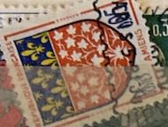
| SOURCE | TITLE| IMAGE MATCH | click to source page |
| eBay | France #YT1352 MNH 1962 Amiens [1040 Mi1406] | eBay | 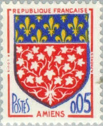 |
| Etsy | Rare Espana Stamp - Etsy | 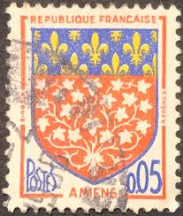 |
| Etsy | France 15fr Stamp; 1877-1880; Blue & Bluish; SC#92; Lightly Cancelled - Etsy Ireland | 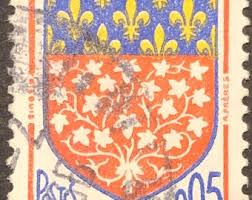 |
| HipStamp | France 1040: 5c Amiens, used, VF | Europe - France & Colonies, General Issue Stamp / HipStamp | 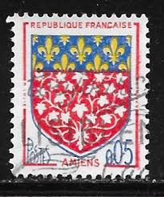 |
| eBay | Timbres français neufs de 1961 à 1970 unité armoiries, drapeaux | eBay | 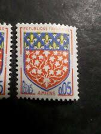 |
| eBay | Timbres français neufs de 1961 à 1970 armoiries, drapeaux | eBay | 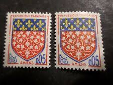 |
| Dreamstime.com | FRANCE - CIRCA 1962: a Stamp Printed in France from the `Arms of French Towns 4th Series` Issue Shows Amiens Coat of Arms Editorial Photo - Image of letter, hobby: 237553476 | 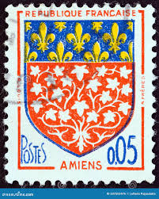 |
| BalkanAuction | Postage stamps | Philately | Collectibles | BalkanAuction | 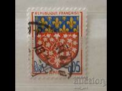 |
| Alamy | Stamp printed in the France shows Coat of arms of Amiens, circa 1962 Stock Photo - Alamy | 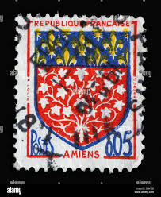 |
| Dreamstime.com | Postage Stamp with the Coat of Arms of the City of Amiens Editorial Stock Image - Image of issue, coat: 210324229 | 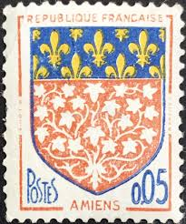 |
| 17 Vintage postage stamps ideas in 2026 | vintage postage stamps, postage stamps, vintage postage | 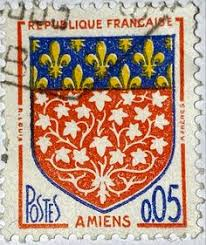 | |
| HipStamp | France 1040 Arms of Amiens 1962 | Europe - France & Colonies, General Issue Stamp / HipStamp | 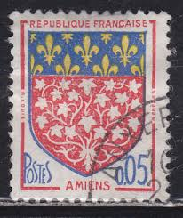 |
| Todocolección | sellos, nuevo, de francia 1976. yvert 1872 - Buy Antique stamps of France on todocoleccion | 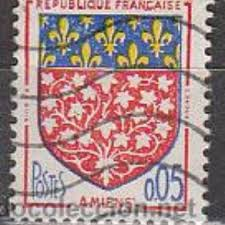 |
| Osta | Prantsusmaa " VAPP " 1962 (205553475) - Osta.ee | 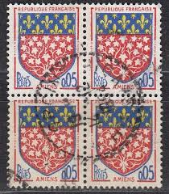 |
| Alamy | France stamp 1962 hi-res stock photography and images - Alamy | 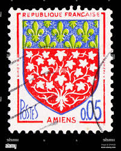 |
| iStock | French Stamp Stock Photo - Download Image Now - Coat Of Arms, Ardennes Department - France, Aube - iStock | 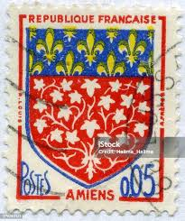 |
| Alamy | Heraldry coat arms france coat hi-res stock photography and images - Alamy | 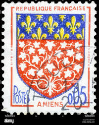 |
| eBay | FRANCE 1040 - Provincial Coats of Arms "Amiens" (pb96991) | eBay | 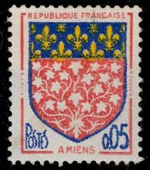 |
| 123RF | FRANCE - CIRCA 1951: A Stamp Printed In The France Shows Arms Of Franche-Comte, Circa 1951 Stock Photo, Picture and Royalty Free Image. Image 24841755. | 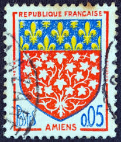 |
| kitantik | Efemera - Fransa Pulu - France Stamp - Mektup Zarfından Kesilmiş / Postadan Geçmiş Pul Filateli - 1961 Damgalı - AMIENS ŞEHİR ARMASI TEMALI FRANSIZ PULU, 0.05 PARA - YABANCI PULLAR- NOSTALJİK DOĞUM GÜNÜ HEDİYESİ - kitantik - kitaLog | 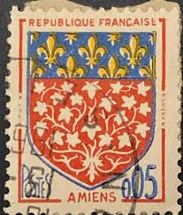 |
| PicClick FR | FRANCE N°1351A "BLASON DE NIORT" NEUF xx TTB EUR 1,95 - PicClick FR | 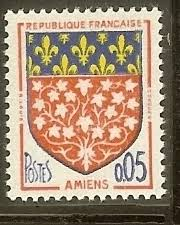 |
| eBay | France E70 MNH 1962 1v Amiens Coat of Arms | eBay | 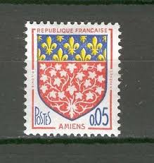 |
| Dreamstime.com | Sello Impreso En Francia Muestra Brazos De Amiens Foto de archivo editorial - Imagen de correspondencia, francia: 218023283 | 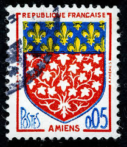 |
| sellosmundo.com | Sellos menos valorados de Doctor Melenuko. Coleccionista de sellos del Mundo. | 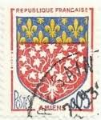 |
| volstamp.in.ua | Buy 1968 Democratic Republic of Yemen Stamp (Federal Arms) Used №21 | 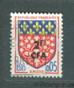 |
| eBay | France Stamp Sc 1040, Pair - Coat of Arms, VF MNH (410A-SX) | eBay | 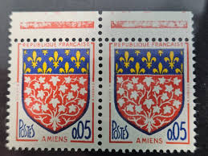 |
| eBay | Stamp Europe France 1962 Amiens Coat of Arms A318 #1040 5c | eBay | 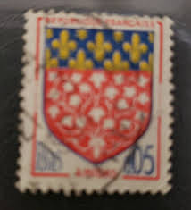 |
| iStock | Collectible Postage Stamps From Bulgaria Stock Photo - Download Image Now - Alphabet, Antique, Bulgaria - iStock | 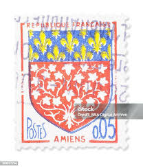 |
| Todocolección | personajes célebres. francia. sellos año 1957 - Buy Antique stamps of France on todocoleccion | 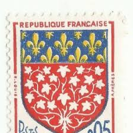 |
| Todocolección | francia ivert nº 1352, escudo de amiens, usado - Buy Antique stamps of France on todocoleccion | 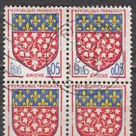 |
| eBay | Reunion #YT344 MNH 1963 Amiens Coat Arms surcharged [345] | eBay | 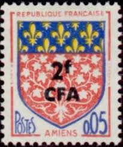 |
| eBay | French Colony Reunion 1961-65 2fr on 5c MNH** Stamp A21P42F6570 | eBay | 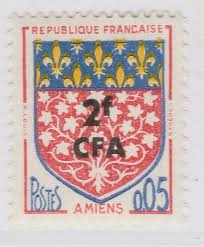 |
| Shutterstock | European French Stamps: Over 1,558 Royalty-Free Licensable Stock Photos | Shutterstock | 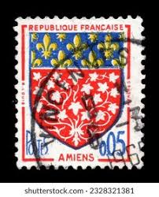 |
| Aukro | Francie 1962 Mi: FR 1406 Série: Znaky měst - Amiens | Aukro | 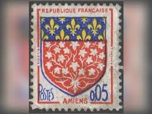 |
| Shutterstock | 3+ Thousand Postage Stamp Paris Royalty-Free Images, Stock Photos & Pictures | Shutterstock | 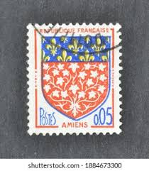 |
| DBA.dk | Frankrig, stemplet, Sammentryk | DBA | 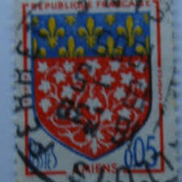 |
| lastdodo.com | Coat of arms of Amiens, with overprint 2#0,05 (1963) - Réunion - LastDodo | 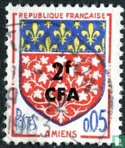 |
| eBay | France 1962 - 1963 5c Arms of Amiens MNH SC 1040 | eBay | 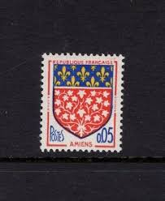 |
| eBay | France 1960-1962 Used 30 Stamps,2 Blocks Of 2,1 Block Of 4, F/VF, See Photos | eBay | 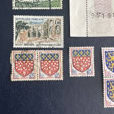 |
| PicClick FR | TIMBRE ALGERIE CORSE Armoiries De Provinces Blason Corse N°243 - 1947 EUR 1,30 - PicClick FR | 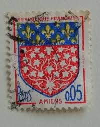 |
| Goodreads | Fundamentos de Economía (Spanish Edition) by Jaime Olivera Novelo | Goodreads | 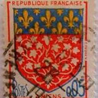 |
| peinture-doury.fr | Mail Stamps MP1663 - Monaco, 800 Different Stamps - Mystic Stamp Company France 800 Different Stamps (stamps For Collectors List | 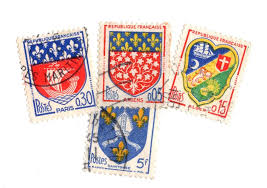 |
| Colnect | Stamp: Brittany Bretagne (France(Coat of Arms) Yt:FR 573,Mi:FR 586,Sn:FR 461,Sg:FR 777,AFA:FR 575,Un:FR 573 📮 | 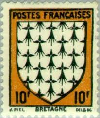 |
| Petergmiller Art Gallery (petergmiller) - Profile | Pinterest | 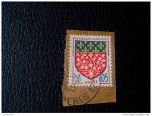 | |
| Find Your Stamps Value | Value of 50 f postes-republique-francaise stamps | 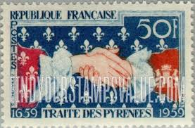 |
| eBay | France Postage Stamp /1959 /Treaty of the Pyrenes / Sc 932 / Used | eBay | 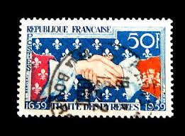 |
| sellosmundo.com | Stamp: Marche 70 c of France Europe* | 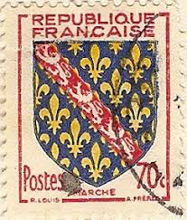 |
| Stampedia | stampedia FRANCE STAMP catalog | 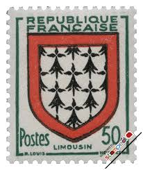 |
| The Itty Bitty Stamp Company | France Scott # 659-663 Mint Hinged – The Itty Bitty Stamp Company | 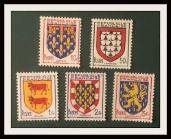 |
| French Philately | 1943 Yt 573 Brittany Bretagne Sc 461 - French Philately - Stamps of France for Sale | |
| Todocolección | 1962 francia, escudo de armas de amiens, yvert - Acquista Francobolli antichi di Francia su todocoleccion | |
| Ebay.nl | France Coat of Arms:10 Fr 1943 (BX) | eBay | |
| eBay | Arms of France 1951. Complete series of 5 new stamps ** (7939° | eBay | |
| francephila.com | France timbres 1943 : FrancePhila.com, France Philately Stamp Store | |
| Dreamstime.com | A Montage of Vintage Postage Stamps from France. Editorial Image - Image of france, vintage: 282863210 | |
| Shutterstock | France-circa 1951a Stamp Printed France Shows Stock Photo 2679432113 | Shutterstock | |
| eBay UK | France 1962 & 1966 Coat of Arms -Amiens & Mont-de-Marsan (sg1499a & 1701) f/used | eBay UK | |
| eBay | France Toulouse Coat of Arms gutter pair stamps 1986 | eBay | |
| eBay | FRANCE:1951 SC#662 MINT Coat of Arms | eBay |